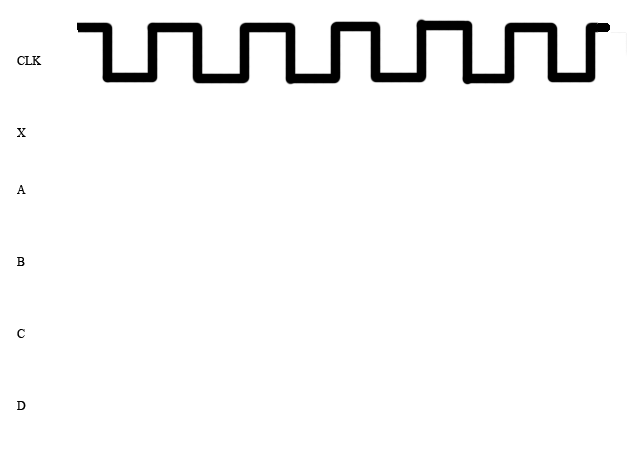
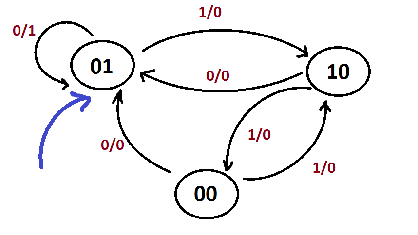

Due Tuesday, March 10, 2015 @ 11:59pm
Updates
Goals
This assignment will check your understanding of synchronous digital systems, state elements, and combinational logic.
Setup
There's no starter code or extra files for this homework. However, we have provided a skeleton solution file which you are required to use. File names are case-sensitive and the submission program will not accept your submission if your file names differ at all from those specified. Detailed submission instructions are given at the bottom of this page. Failure to follow these will result in loss of credit.
You can copy the skeleton file into your current directory using the following command:
$ cp -r ~cs61c/hw/04/hw4.txt .
Exercises
Problem 1: Waveform Diagrams

Consider the circuit of Flip-Flops (FF) shown here. Assume that input X alternates between 1 and 0, 10ns after every rising edge. Initially, X is 0 (so 10ns after the first rising edge it should be 1) while A, B, C, and D are unknown. Assume one clock cycle is 30 ns. Given the clock signal, draw the wave for input X, and the signals at points A, B, C, and D in the circuit for the first 6 clock cycles. Assume that the clk-to-q delay is 5 ns, the setup time is negligible (~0 ns), and the hold time is 5ns. Assume that Flip-Flops take their new value on the rising edge of the clock cycle. Assume time = 0 on the first rising edge. Note the NOT gate that precedes B (you may ignore propagation delay for this problem).
You should fill out the waveform diagram below to help you answer the following questions. However, you only have to submit the answers to the questions, not the whole diagram. Consider six clock cycles (so six rising edges) as shown in the diagram. Assume the diagram is cut off 5ns after the last rising edge. You only need to consider from t = 0 ns to t = 155 ns for this problem.
|

|
|
Problem 2: Clock Frequency - 3 pts
Consider this circuit. It accumulates two arguments at a time, arriving at each clock period. You are given the following: the adder propagation delay is 1 ns, the register setup time is 2 ns, the register hold time is 2 ns, the register clk-to-q delay is 3 ns, and the clock frequency is 100 MHz.
 |
|
Problem 3: Simple FSM and Truth Tables - 3 pts
Design an FSM that would take an infinite stream of bits and output 1 twice if it sees two consecutive 1's. In other words, given some input Xi, if Xi-2 = Xi-1 = 1 or Xi-1 = Xi = 1, then it will output 1. Then convert it into a truth table mapping each state and input to a next state and an output. Name the states meaningfully so that it is easily understandable (for example, Seen1 and Seen11). You should have at most four states only. You only need to submit the truth table; you do not need to submit your drawing of the FSM.
Problem 4: Truth Tables, Boolean Algebra, FSMs, Logic Circuits - 5 pts
Consider the following finite state machine.|  |
|
Submission
There are two steps required to submit hw4.txt. Failure to perform both steps will result in loss of credit:
First, you must submit using the standard unix submit program on the instructional servers. To do so, follow these instructions after logging into your cs61c-XX class account:
$ mkdir ~/files_for_submit $ cd ~/files_for_submit $ mkdir hw4 $ cd hw4 $ cp [Your hw4 text file location] hw4.txt # replace the braces with the location of your hw4.txt file $ submit hw4
Once you type submit hw4, follow the prompts generated by the submission system. It will tell you when your submission has been successful and you can confirm this by looking at the output of glookup -t.
Additionally, you must submit hw4.txt to your GitHub repository. To do so, follow these instructions after logging into your cs61c-XX class account:
$ cd ~/work # this is the location of your git repo on your class account $ mkdir hw4 $ cd hw4 $ cp [Your hw4 text file location] hw4.txt # replace the braces with the location of your hw4.txt file $ cd .. $ git add hw4/hw4.txt $ git commit -m "Homework 4 submission" $ git tag -f "hw4" # The tag MUST be "hw4". Failure to do so will result in loss of credit. $ git push origin master --tags # Note the "--tags" at the end. This pushes tags to github
What's the point of using tags? Using tags allows the course staff to determine which commit represents your hw4 submission, even if you make later commits to your repository.
Your "releases" page on GitHub (accessible by clicking on "Releases" from your repo's homepage) should at this point contain the tag you created to submit this hw.